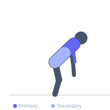
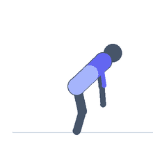

Exercise guide / Monkey Bar Traverse
Monkey Bar Traverse
A continuous traverse across a series of horizontal bars or rungs moving hand over hand. The movement demands grip endurance, shoulder stability, and rhythm. Used in obstacle courses, military fitness tests, and gymnastics, the traverse develops forearm endurance and lat strength.
Primary muscles
latissimus dorsi
biceps brachii long head
Secondary muscles
rectus abdominis
transverse abdominis
Equipment
Pull-Up Bar (Doorframe)


Starting position
- Set up for Monkey Bar Traverse in proper strongman position.
Setup
- Prepare all equipment and body position for Monkey Bar Traverse.
Steps
- Step 1: Hang from first bar with both hands.
- Step 2: Swing body forward and reach for next bar with alternating hands.
- Step 3: Continue traverse with rhythmic hand-over-hand movement.
- Step 4: Traverse full length and dismount safely at the end.
Coaching cues
- Maintain rhythm throughout
- Loose grip between catches to save forearms
Breathing
- Brace core maximally before every lift. Breathe between reps if needed.
Range of motion
- Full range of motion specific to the implement being used.
Tempo
- Explosive concentric phase, controlled eccentric.
Common mistakes
- Stopping momentum mid-traverse
- Gripping too tightly causing forearm fatigue
Safety
- Use collars on all loaded barbells.
- Ensure clear path for carries.
- Have spotters for overhead movements.
Training
- strength: 1–5 reps
- power: 1–3 reps
- strength: 3–6 sets
- power: 3–5 sets
- Rest: {'strength': 240, 'power': 300}